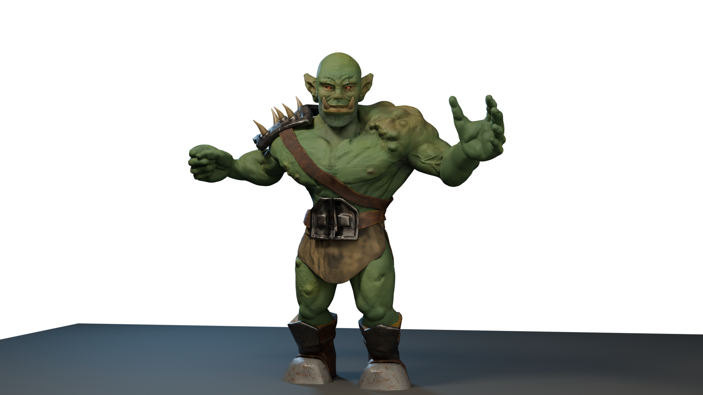

Fantasy Orc
3D Character Design

About This Project
This Fantasy Orc character was designed and modeled as part of my exploration into creating stylized fantasy characters. The character features detailed texturing and a strong, imposing silhouette that captures the essence of fantasy orc warriors.
I focused on creating a balance between realism and stylization, with attention to anatomical details while maintaining a distinctive fantasy aesthetic. The character's armor and accessories were designed to tell a story about their role and background in a fantasy world.